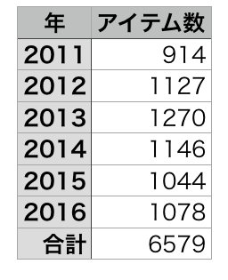
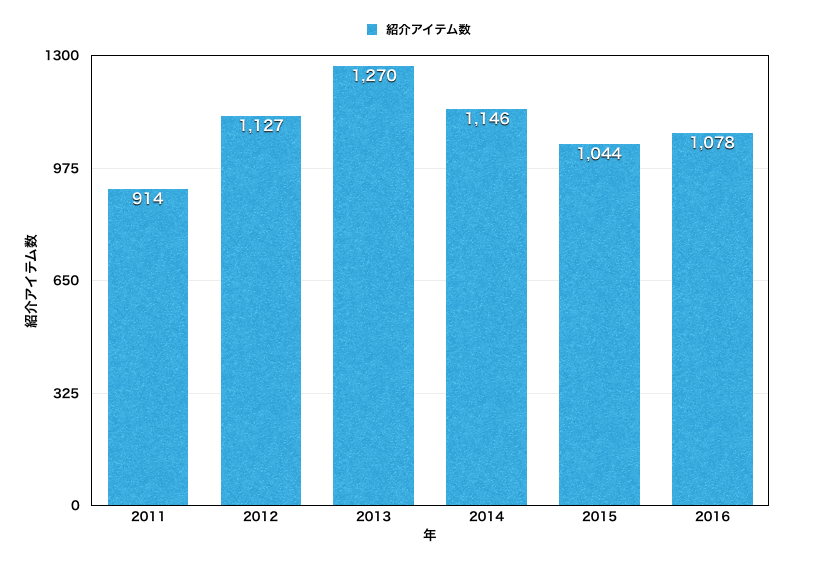
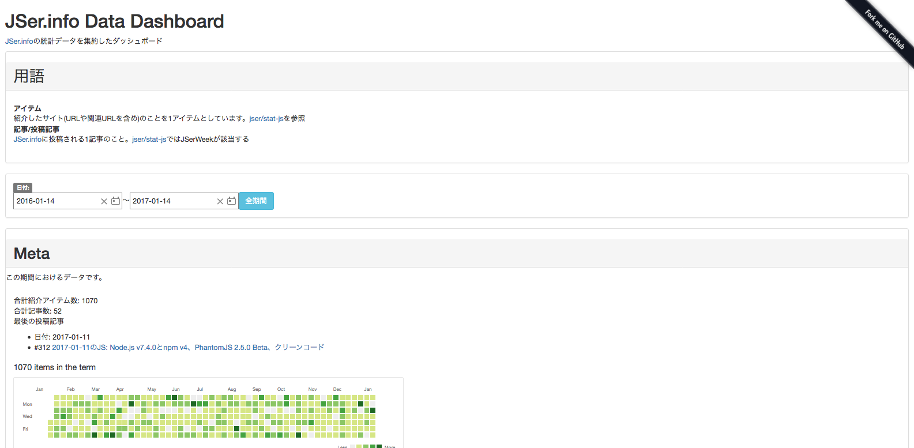
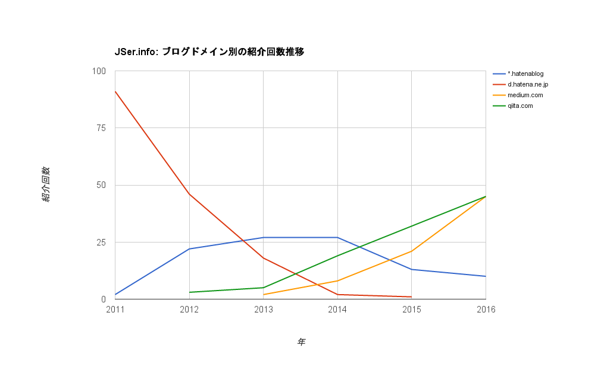
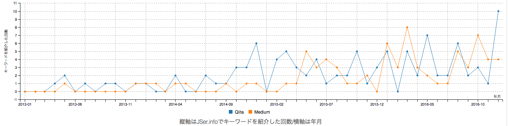
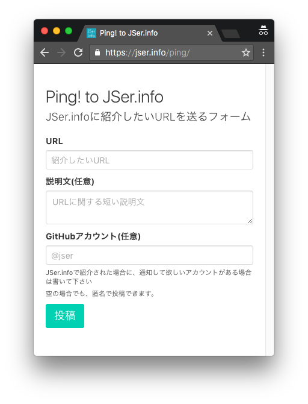
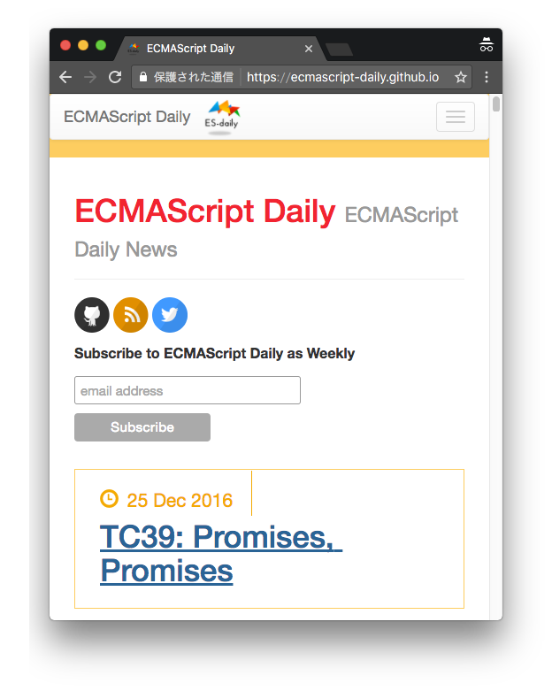
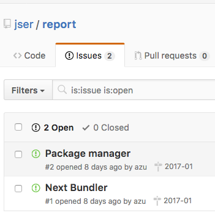

autoscale: true
JSer.info 6周年イベント
自己紹介

- Name : azu
- Twitter : @azu_re
- Website: Web scratch, JSer.info
JSer.infoって何?
- JavaScriptについて週一で書くブログ
- 2011年1月16日開始
- 2017年1月16日で6周年(イマココ)

紹介アイテム数
今まで紹介した記事


JSer.infoで紹介してる記事の傾向の変化
JSer.infoのデータセット
- JSer.infoで紹介した記事(アイテム)を入れた6000以上のJSONデータ
- タイトル/URL/タグ/説明/関連記事などが入ってる
- jser/stat-js
- データセットを簡単に扱うためのライブラリ
- JSer.infoの記事とアイテムの関連付けなどを行える
- MITライセンスで利用できる
^https://github.com/jser/source-data を直接使うよりはstat-jsを使うほうが楽だし確実
JSer.info Data Dashboard

JSer.info Data Dashboard
- JSer.infoの投稿/紹介記事データの解析用ダッシュボード
- 年ごとタグの推移、アイテム数などいろんな視点でのデータ
- CSVでダウンロードできるようになっている(下処理済みのデータ)
- このスライドのために作った…
話を戻して、Data Dashboardのデータを見ていく
紹介ソースの推移
ドメイン別

ドメイン別
- GitHubは圧倒的に増えている
- リリースノートを書くドメインは紹介されやすい傾向
- ブログ系のソースとなるドメインは少し変化している
- Qiita、Mediumなど
ブログ系のドメイン

QiitaとMedium

- JSer.infoトレンドで見れる
- Qiitaが12月に伸びるのはアドベントカレンダーが要因
ドメインの変化まとめ
- GitHub、Medium、Qiitaなどのプラットフォーム利用者は増えている
- 自前のドメインとの見てもらいやすさの違いがある
- フィードバック/通知/フォローなど
- Qiita、Medium、ブログ 使い分けコレクション
- プラットフォーム自身も変化する
プラットフォームのメリット・デメリット
- タグやグループと行った"個人"ではない単位でWatchできる
- => "JavaScript"という情報が流れてきやすいのでWatchが簡単
- JSer.infoとしてプラットフォームを追うのは簡単
- しかし、情報の偏りが出やすいのでプラットフォーム以外も見る必要がある
- 例) プラットフォーム上で目立つため乱暴な意見が出やすい傾向
プラットフォーム以外のWatch
- プラットフォーム以外の利用者が周知する場合に利用する場所
- SNS(Twitter)、SBM(はてなブックマーク)、HN系(Echo JS)
- 個人のブログ/RSS/GitHub/動画サイト...
- 人がいる所に情報はあるので見る場所は様々になる
JSer.infoへの情報を投げる場所
^ 去年から自分が見に行く以外の方法として、JSer.infoに対して情報を投げる場所を用意しました。
jser/ping


目的
- ユーザー投稿ができるようにしたい
- (自己)推薦したい記事を投稿して欲しい
- JSer.info Pull Request Formは気軽じゃない
- jser/pingは匿名でも投稿できる気軽さを重視
- URLを投げればIssueが立つ仕組み
- ついでに@jser_infoにも投稿される
サブ目的
- ストック場所
- すぐに良し悪しを判断できない場合に、とりあえず投げておける場所
- API
- github.com/jser/ping#api
- APIとして動くものが欲しかった
ストックの例
- リリース待ち
- 連載もの扱い
- 単発で良し悪しが判断できない
- 要議論
- Opinion、修正を投げてみるなど
投稿フロー

- 記事を読む
- 投稿用クライアント(postem)でブクマ
- textlintで自然言語のLint
- 一週間ぐらい1、2を繰り返して紹介記事のデータを貯める
- 編集用アプリ利用、Gitterでbotが投稿タイミングを通知
- 貯めたアーカイブを整形
- 整形した記事 + ヘッドラインを書く
- Pull Request駆動 => CIが自動チェック
- Atom+linter-textlintでリアルタイムLint
- 記事の完成
投稿フロー

- 基本的に最初の頃と大きくは変わってない
- ブクマ時に説明文を考える、関連を探す
- LintやCIなど自動チェック系
- 更新タイミングの通知
- Gitter使いにくいのでslackにしたい感じもする
- 後戻りをできるだけ小さくするデザイン
- 更新コストの最小化が目的
投稿フロー
- 投稿は分散的に行う
- Realtime JSer.infoではリアルタイムに見られる
- 投稿時に詳細を設計してしまうのは、継続性のボトルネックになりやすい
- 記事化するときに結果統合性が成り立つように集約する
- => 詳しくは次のスライドで
JSer.info 以外の変化
ECMAScript Daily
ECMAScript Daily
- ECMAScript情報サイト
- 去年開始したECMAScriptについて扱う情報サイト
- ECMAScriptの情報サイトを始めて1年経った | Web Scratch

ECMAScript Daily
- ECMAScript DailyもECMAScriptの情報を見ていてメモする場所が欲しかったのでサイト化した
- 習慣 => サイト化
- 恐らく唯一のECMAScript専門サイト…
今後

- トピックベースのレポートを書く方法を検証してる
- 中期的な課題を解決したい
- github.com/jser/report/issues
- 一番大事なのは時間的なコスト
- 継続的にやるためにはどうやっても必要
- 今年は何かを検証したい
まとめ
- HTTPS化した
- jser/ping作った
- 投稿フローはあまり変わってない
- ECMAScript Daily続けてる
Next: JSer.infoの作り方 :arrow_right:
参考
- JSer.infoの遊び方 - JSer.info
- JSer.info 300回目 && https化 && ユーザー投稿機能 - JSer.info
- GitHub Issueでやってるコミュニティ